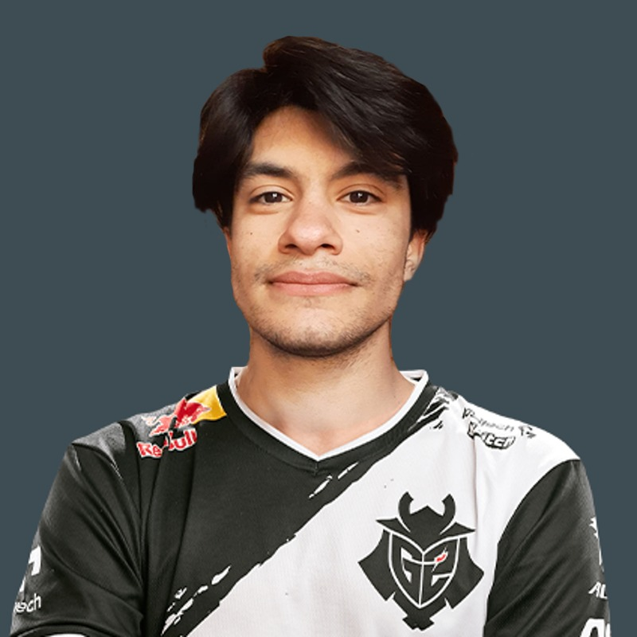

Boca Juniors
El club más grande de Argentina
Comprar entradasÚltimas noticias
-
Chico Serna hablo sobre un posible regreso de Paredes a Boca Juniors: "Si el quiere, que llame y mañana debuta"
Uno de los integrandes del Consejo de Futbol aseguro que el mediocampista tiene las puertas abiertas del club, aunque opto por la mesura a la espera de conocer cual sera su futuro en la Juventus
-
Riquelme y Martin Palermo vuelven a jugar al Counter Strike Global Offensive
Despues de su mala racha como jugadores profecionales de Valorant vuelven a sus inicios a querer mostrarnos "Un Nuevo Estilo de Juego".
-
La nueva tendencia a la cual se une Carlos tevez
Una entrevista realizada por InfoBae hacia Tevez, El mitico jugador de Boca asegura que empezo a estudiar programacion ya que necesita una salida laboral rapida, asegura que fue lo mejor que le paso en los ultimos años, crear una pagina y entender Flex/Grid es mejor que ganar la Libertadores.
Plantel
| Jugador | Posición | N° | Edad | Altura |
|---|---|---|---|---|
| Javier García | Arquero | 13 | 35 | 1.80 m |
| Luis Advíncula | Defensa | 17 | 32 | 1.78 m |
| Facundo Roncaglia | Defensa | 35 | 24 | 1.79 m |
| Nicolás Figal | Defensa | 4 | 28 | 1.80 m |
| Frank Fabra | Defensa | 18 | 31 | 1.74 m |
| Ezequiel Fernández | Mediocampista | 21 | 20 | 1.78 m |
| Alan Varela | Mediocampista | 5 | 21 | 1.78 m |
| Óscar Romero | Mediocampista | 10 | 30 | 1.76 m |
| Luca Langoni | Delantero | 41 | 20 | 1.72 m |
| Darío Benedetto | Delantero | 9 | 32 | 1.77 m |
| Sebastián Villa | Delantero | 22 | 26 | 1.79 m |
